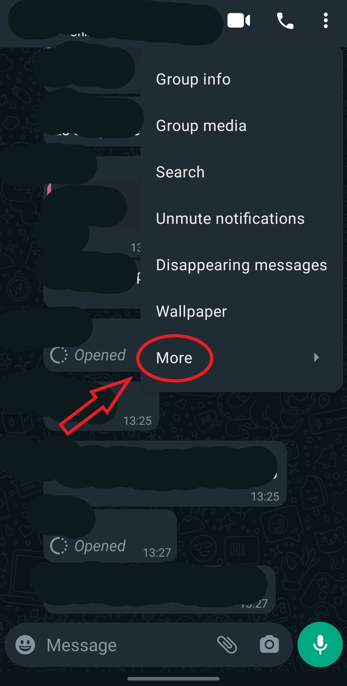
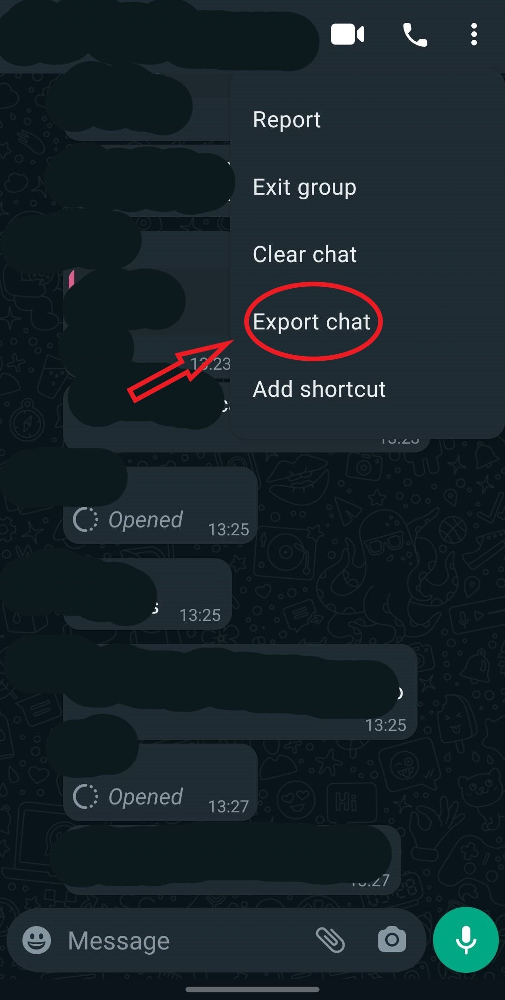
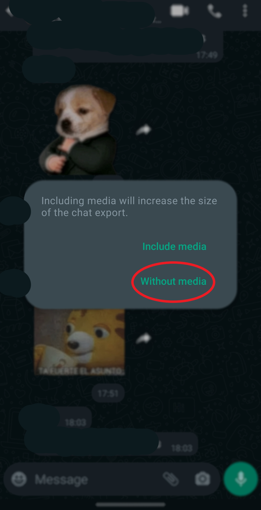

Welcome to our WhatsApp statistics page. Get insights into your favourite WhatsApp group.
Note
WhatsApp only allows you to export the last 40k messages of a group chat. On top of that if there are
messages that may be wrong or something the program removes them. Just to clarify if later you see around
39.9k messages analyzed or something like. Hope you like it!
The Data is not store or use outside this website. Don't worry about your
conversation with your friends. You are save.😀
User Guide

Step 1: Click on the three dots and then more.

Step 2: Then click on export chat.

Step 3: Click on without media and save it where you like.
Hour distribution
This graph shows the number of messages sent by hour in your group.
Month distribution
This graph shows the amount of messages sent each month
Days distribution
Here we have the amount of messages distributed by days.
People Messages
The most interesting one. Here you can see how many messages each person has sent as
well as the amount of multimedia (photos, images, videos and sticker all combined) sent.
Days Talk
The following graph shows the total number of different days a person has talk. At
the top you can see the number of days in total.
No Talk Streak
The graph shows the maximum days that a person has spent without sending a message
(this includes links, photos, videos or whatever). Go and judge your friend if you can call it like that.